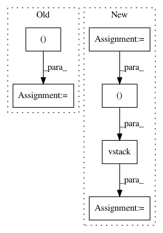

dd1575073ca40d69c9d9f5f0d64e7517e23eba8a,framework/Optimizers/parentSelectors/parentSelectors.py,,rankSelection,#Any#,118
Before Change
nParents= kwargs["nParents"]
pop = population.copy()
selectedParent = xr.DataArray(
np.zeros((nParents,np.shape(pop)[1])),
dims=["chromosome","Gene"],
coords={"chromosome":np.arange(nParents),
"Gene": kwargs["variables"]})
return selectedParent
After Change
pop = population.copy()
index = np.arange(0,pop.shape[0])
rank = np.arange(0,pop.shape[0])
data = np.vstack((fitness,index))
dataOrderedByDecreasingFitness = data[:,(-data[0]).argsort()]
dataOrderedByDecreasingFitness[0,:] = rank
dataOrderedByIncreasingPos = dataOrderedByDecreasingFitness[:,dataOrderedByDecreasingFitness[1].argsort()]
orderedRank = dataOrderedByIncreasingPos[0,:]
selectedParent = rouletteWheel(population, fitness=orderedRank , nParents=kwargs["nParents"])
In pattern: SUPERPATTERN
Frequency: 4
Non-data size: 6
Instances
Project Name: idaholab/raven
Commit Name: dd1575073ca40d69c9d9f5f0d64e7517e23eba8a
Time: 2020-07-06
Author: diego.mandelli@inl.gov
File Name: framework/Optimizers/parentSelectors/parentSelectors.py
Class Name:
Method Name: rankSelection
Project Name: geomstats/geomstats
Commit Name: 3c082fc0821ff9f9b1284a486a5cf60f9aec238e
Time: 2018-11-07
Author: null
File Name: examples/loss_and_gradient_se3.py
Class Name:
Method Name: grad
Project Name: mne-tools/mne-python
Commit Name: 9613c71f24b8f3f289fcbace86be57dcc66360ed
Time: 2020-07-20
Author: larson.eric.d@gmail.com
File Name: mne/channels/interpolation.py
Class Name:
Method Name: _make_interpolation_matrix
Project Name: scikit-learn-contrib/imbalanced-learn
Commit Name: cddf39be59c3c1231d2d4fd3b9bfc10a21e63780
Time: 2017-08-24
Author: g.lemaitre58@gmail.com
File Name: imblearn/under_sampling/prototype_generation/cluster_centroids.py
Class Name: ClusterCentroids
Method Name: _sample